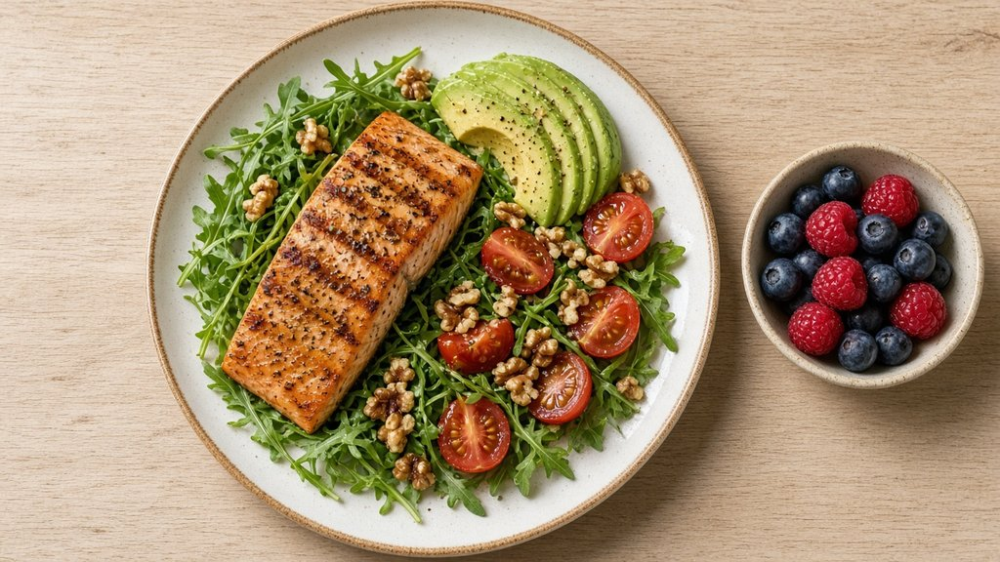

Free joint comfort guide
Want to Keep Moving Comfortably After 45? Start With These Simple Habits
Stiff knees in the morning. A little creak when you stand up. For many adults over 45, this is a familiar part of getting older, and the good news is that small daily habits can make a real difference in how your joints feel.
Why joints feel different as we age
Your joints are cushioned by cartilage and lubricated by synovial fluid, a gel-like fluid that helps bones glide smoothly. Over time, everyday wear, less movement, and changes in hydration and nutrition can affect how comfortable and flexible your joints feel.
5 everyday habits that support joint comfort
- Move a little, often. Gentle walking, swimming, or cycling keeps joints active. Try to stand up and stretch every 30–60 minutes.
- Stretch in the morning. 2–3 minutes of slow ankle circles, knee lifts, and shoulder rolls can help you feel less stiff.
- Strengthen the muscles around your joints. Simple exercises like chair squats support your knees and hips.
- Drink enough water. Hydration matters for your whole body, including the tissues around your joints.
- Eat colorful, whole foods. Leafy greens, fatty fish, berries, nuts, and olive oil are part of a balanced, joint-friendly diet.

Go slow and gentle, and never push into pain. If something hurts, stop and check with your doctor.
Looking for extra nutritional support?
Some people like to add a joint supplement to their routine. One option I've been researching is Joint Genesis™. The company describes it as a doctor-formulated supplement that combines several joint-supporting nutrients with Mobilee®, an ingredient studied for its role in supporting synovial fluid.
According to the company, it's designed to support mobility, flexibility, a healthy inflammatory response, and joint comfort. It isn't a magic fix, and results vary from person to person.
If you'd like to learn more and decide for yourself, you can take a short quiz on the company's website. It asks a few simple questions and then shows you the company's own product information:
👉 Take the 60-second Joint Pain Type quizOpens the company's quiz page (affiliate link)Disclosure: I earn a commission if you buy. Last updated: October 19, 2026. Official product information is on the company's page. Views are my own, not the company's.
Money-back guarantee: According to the official Joint Genesis™ website, orders are covered by a 180-day money-back guarantee. Please check the official site for the current terms before you order.
Buy only from the official website. To make sure you get the genuine product and the company's guarantee, order only through the official Joint Genesis™ website, not from third-party sellers or marketplaces.
Always talk to your doctor before starting any new supplement, especially if you take medication or have a medical condition.
Quick recap
Move often, stretch gently each morning, build a little strength, stay hydrated, and fill your plate with colorful whole foods. Small habits, done consistently, are a great foundation for staying active as you age.
Take the short Joint Pain Type quizAffiliate link: I earn a commission if you buy
Disclosure: I earn a commission if you buy. Last updated: October 19, 2026. Official product information is on the company's page. Views are my own, not the company's.
Sources and further reading
The everyday habits on this page are based on general guidance from these reputable health organizations:
- Arthritis Foundation: 8 Ways Exercise Helps Your Joints
- Arthritis Foundation: Osteoarthritis
- Mayo Clinic: Exercise helps ease arthritis pain and stiffness
- National Institute on Aging (NIH): Exercise and Physical Activity
- National Institute on Aging (NIH): Osteoarthritis
- NIAMS (NIH): Osteoarthritis
These organizations do not endorse this site or any product mentioned on it.
Contact
Have a question or comment? For now, the best way to reach me is through the Healthy Joints Daily YouTube channel. You can also read more about me and this site.